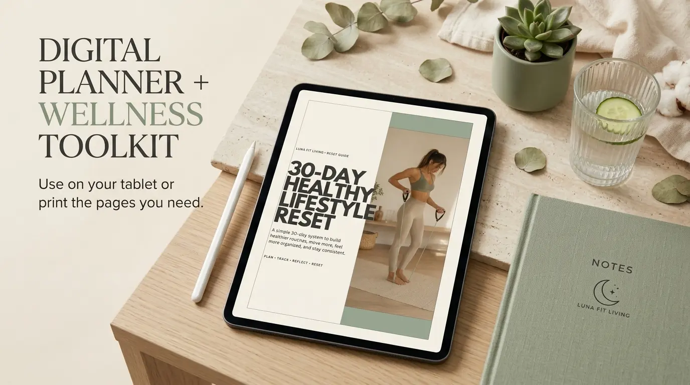
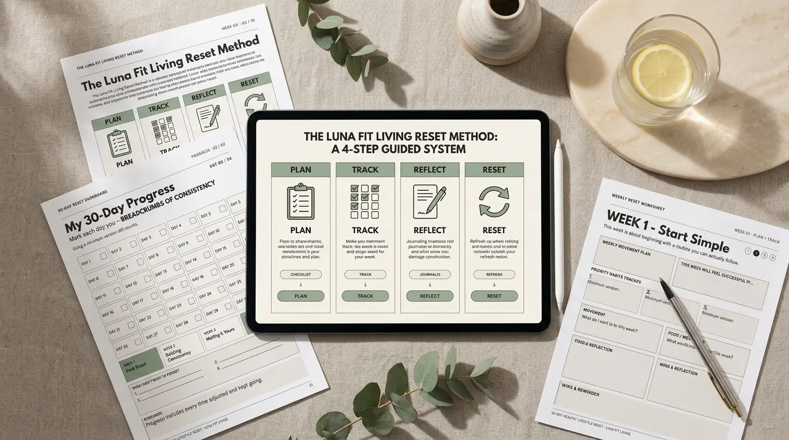
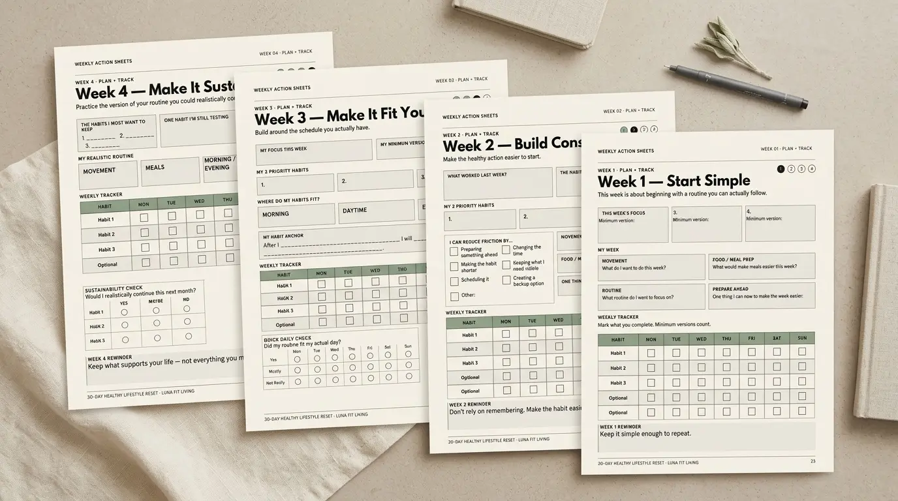
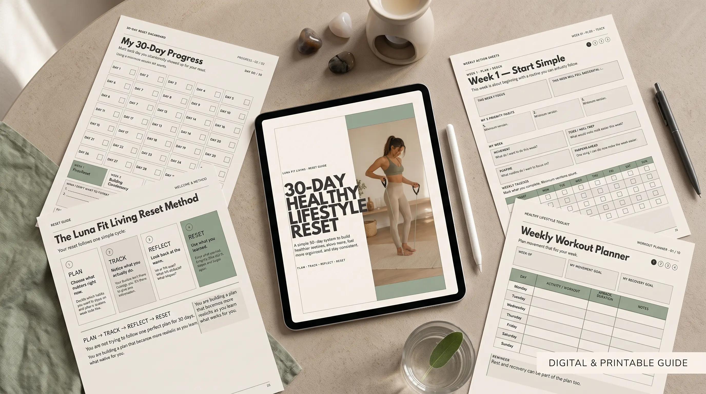
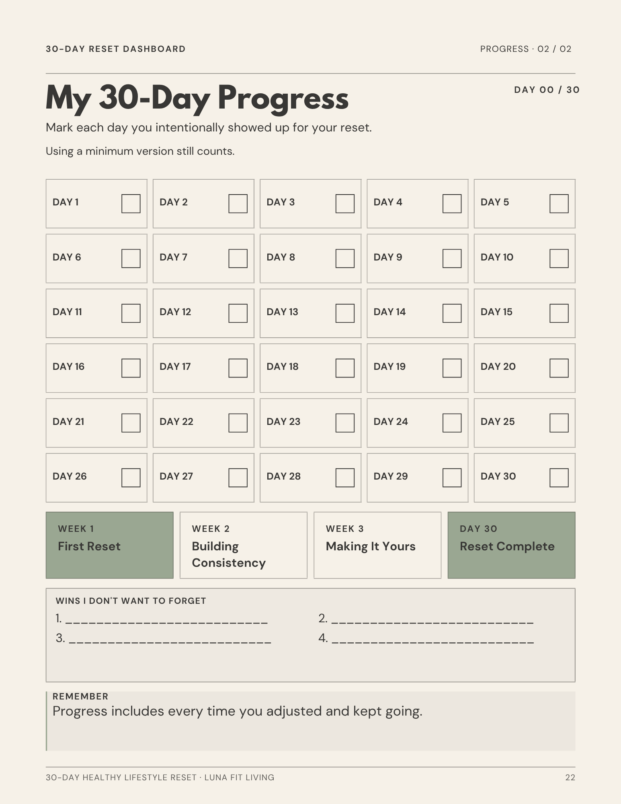
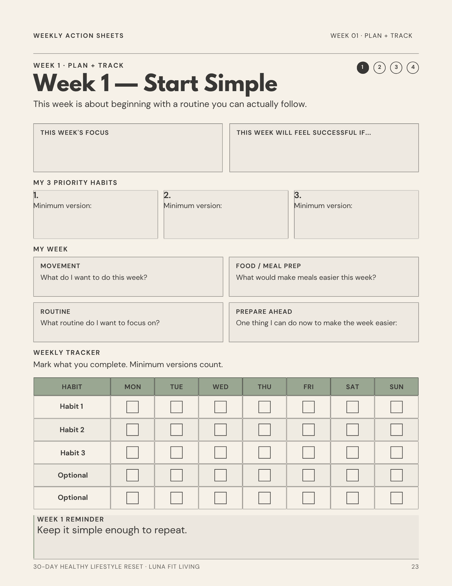
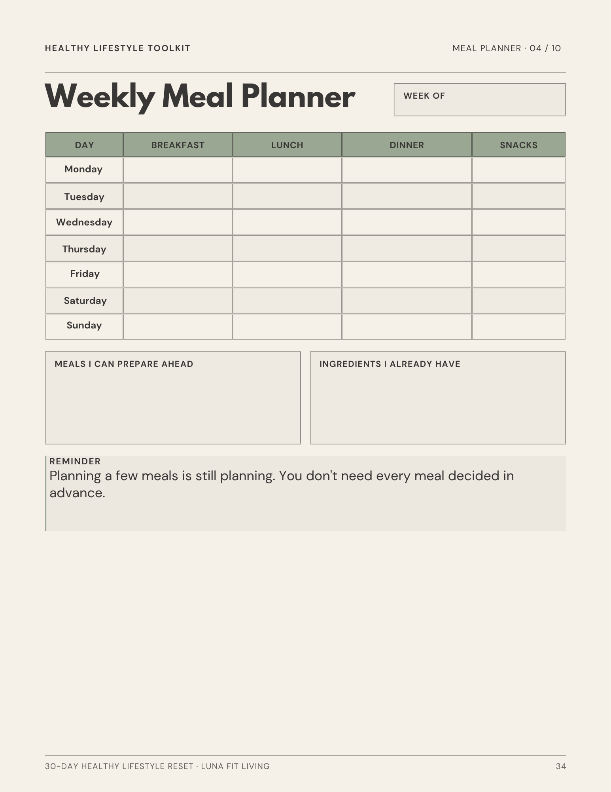
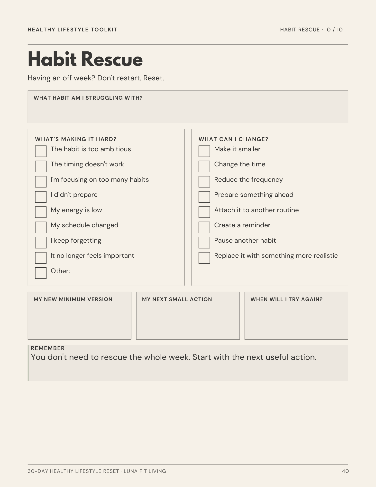
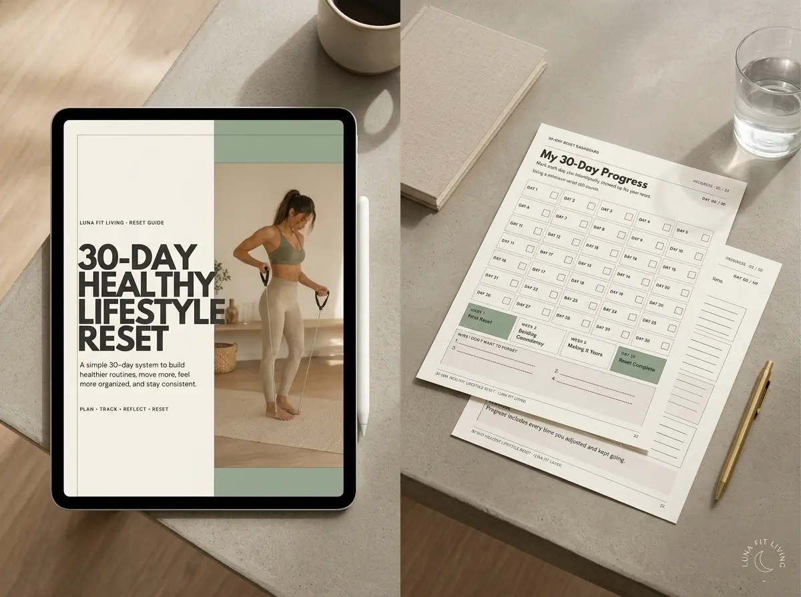

Reset Guide
Understand the method before you start.A guided introduction to choosing priorities, creating minimum versions, reducing friction, navigating disrupted routines, and deciding what to keep after Day 30.
Build healthier routines without trying to change everything at once.
A guided 30-day digital wellness system designed to help you choose what matters, stay consistent, and build routines that work with your schedule — not against it.
Instant digital download · Tablet-friendly · Printable · Secure checkout via Payhip

You probably don’t need more advice about healthy habits.
You already know that moving more, planning meals, getting enough rest, and creating better routines can help. The harder part is making those habits work when your schedule changes, motivation dips, or an ordinary week gets busy.
You try to change everything at once — workouts, meals, sleep, hydration, routines, and more — until the plan becomes hard to maintain.
A busy day or unexpected week makes the “ideal” routine harder to follow.
A few missed habits quickly become:
“I’ll restart Monday.”
Even when the progress you already made still counts.
A different way to think about consistency
You don’t need another perfect plan.
You need a routine you know how to return to.
The 30-Day Healthy Lifestyle Reset helps you focus on fewer priorities, create simpler options for harder days, and adjust when something isn’t working.
Progress doesn’t have to disappear just because the plan changes.
The 30-Day Reset Method
Instead of creating one perfect plan on Day 1 and hoping it survives the next 30 days, the Reset gives you a simple cycle you can repeat as you learn.
Set a few priorities, decide how often you want to practice them, and create a simpler minimum version for harder days.
Use your Dashboard and Weekly Action Sheets to follow your habits and spot patterns without expecting every day to look the same.
Notice your wins, where friction showed up, and what made your habits easier or harder to maintain.
Keep what works, simplify what feels too difficult, and change what no longer fits.

Choose a few priorities and create a manageable starting point.
Reduce friction and make healthy actions easier to repeat.
Adapt your habits around the schedule you actually have.
Decide what deserves to continue.
The goal isn’t a perfect 30-day streak.
It’s a clearer understanding of the routine that works better for you.

Everything inside your Reset
The 30-Day Healthy Lifestyle Reset combines guidance with practical planning tools, so you’re not left staring at a blank habit tracker wondering what to do next.

A guided introduction to choosing priorities, creating minimum versions, reducing friction, navigating disrupted routines, and deciding what to keep after Day 30.
Set your intention, choose your core habits, create backup options, and keep your 30-day progress visible.
Plan and track your week, then reflect on what worked, what got in the way, and what you want to adjust next.
Ten reusable tools for movement, meals, routines, weekly preparation, and habit troubleshooting.
Use what helps. Skip what doesn’t. Come back whenever you need it.
Also included
You get the guidance to build your plan, the tools to follow it, and reusable resources to support the habits you decide to keep.
See what’s inside
The Reset was designed to make your next step easy to see — whether you’re setting up your month, planning the week, organizing meals, or adjusting a habit that keeps getting skipped.
30-Day Reset Dashboard
Set your intention, choose your core habits, define minimum versions, and keep your monthly progress visible.
Your month-at-a-glance home base.

Weekly Action Sheets
Decide what matters, follow your habits, recognize wins, notice friction, and choose what to adjust next.
Plan + Track → Reflect + Reset
Weekly Meal Planner
Create a simple overview of the meals you want available — without following a prescribed diet or meal plan.
Simple organization for meals you choose yourself.
Habit Rescue Sheet
When a habit keeps getting skipped, look at what’s creating friction and choose an adjustment that makes it easier to try again.
Identify the friction. Adjust the habit. Try again.Every page has a purpose, but you don’t have to use every page at once.
Start with the core Reset and add Toolkit pages only when they’re useful.
Digital + Printable
Keep everything digital, print the pages you want, or combine both depending on what feels easiest for your routine.
PDF annotation note: The files are designed for use with compatible PDF annotation apps. They are not interactive form-field PDFs.
One product. Two ways to use it.
$9 · Instant Digital Download Start your 30-day reset Tablet-friendly · Printable · Instant access after purchase
Is this Reset for you?
The 30-Day Healthy Lifestyle Reset is designed for people who want more structure around healthy habits without turning everyday wellness into another complicated set of rules.
You don’t need a perfect morning routine, detailed meal plan, strict workout schedule, or 30 completely predictable days.
The Reset helps you start with what you have, learn from what happens, and make adjustments along the way.
What this Reset isn’t
The Reset is intended for personal organization, reflection, and habit planning.
It is not a diet or prescribed meal plan, a weight-loss or body-transformation program, a personalized workout program, medical or nutritional advice, or a promise of specific results.
The Reset doesn’t tell you exactly what to eat, which workouts to complete, or what your ideal routine should look like.
It gives you a framework for choosing your priorities, organizing them, noticing what works, and adjusting as you go.
The structure is provided. The routine stays yours.
Frequently Asked Questions
It’s a guided digital wellness system designed to help you build healthier routines over 30 days.
Your purchase includes the Reset Guide, 30-Day Dashboard, Weekly Action Sheets, Healthy Lifestyle Toolkit, Start Here guide, and Complete Edition PDF.
No. This is a digital product and no physical item will be shipped.
After your purchase is completed, you’ll receive electronic access to download your PDF files. We recommend opening the Start Here guide first.
You do not need an iPad.
The files can be viewed on compatible computers, tablets, and mobile devices. To write directly on them digitally, you’ll need a compatible PDF annotation app and supported device.
The PDFs are designed for digital annotation rather than built-in interactive form fields.
No.
You can complete the Reset digitally, print selected pages, or combine both.
You also don’t need to use every Toolkit worksheet. Choose only the tools that support your current priorities.
No.
The Reset helps you organize movement, meals, routines, and healthy habits, but it does not prescribe workouts, diets, calorie targets, meal plans, or personalized health recommendations.
You don’t need to start over.
Use your minimum versions, weekly reflections, and Habit Rescue tools to look at what got in the way, adjust the plan, and continue from where you are.
You may reprint or duplicate reusable worksheets for your own personal use.
Your purchase is licensed to one purchaser for personal use only. The files may not be shared, redistributed, resold, or used commercially.
Because this is a digital product delivered electronically, purchases may be non-refundable after access or download has been provided, except where required by applicable law or platform policy.
If you receive an incorrect, incomplete, or corrupted file, contact hello@lunafitliving.com so we can help resolve the issue.
Ready when you are
Start your 30-Day Healthy Lifestyle Reset with a complete digital system designed to help you plan, track, reflect, and adjust — without trying to change everything at once.
One complete digital bundle · Instant access after purchase
Start your 30-day reset Instant digital download · Tablet-friendly · Printable · Secure checkout via PayhipStart with what matters.
Adjust as you go.
Keep what works.